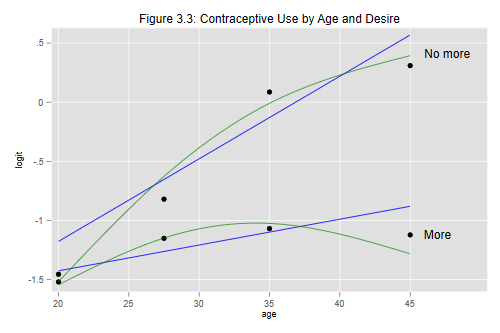

We now turn to logistic regression models with two or more predictors. For consistency with the notes we will continue to work with grouped data. This time we will have 8 groups, defined by the combinatios of four age groups and two categories of desire for more children, as shown on table 3.7:
. clear
. input ageg nomore users nonusers n
ageg nomore users nonusers n
1. 1 0 58 265 323
2. 1 1 14 60 74
3. 2 0 68 215 283
4. 2 1 37 84 121
5. 3 0 79 230 309
6. 3 1 158 145 303
7. 4 0 14 43 57
8. 4 1 79 58 137
9. end
. label define ageg 1 "< 25" 2 "25-29" 3 "30-39" 4 "40-49"
. label values ageg ageg
There are five basic models of interest for this dataset. I will fit
fit them all and, when it's all done, reproduce the deviances in
Table 3.8. Let us start with the age model. I'll use glm
throughout to get deviances
. glm users i.ageg, family(binomial n)
Iteration 0: log likelihood = -54.650533
Iteration 1: log likelihood = -54.488893
Iteration 2: log likelihood = -54.488891
Generalized linear models No. of obs = 8
Optimization : ML Residual df = 4
Scale parameter = 1
Deviance = 66.48163408 (1/df) Deviance = 16.62041
Pearson = 65.14725859 (1/df) Pearson = 16.28681
Variance function: V(u) = u*(1-u/n) [Binomial]
Link function : g(u) = ln(u/(n-u)) [Logit]
AIC = 14.62222
Log likelihood = -54.48889125 BIC = 58.16387
------------------------------------------------------------------------------
| OIM
users | Coef. Std. Err. z P>|z| [95% Conf. Interval]
-------------+----------------------------------------------------------------
ageg |
25-29 | .4606758 .1727255 2.67 0.008 .1221401 .7992116
30-39 | 1.048293 .1544406 6.79 0.000 .7455952 1.350991
40-49 | 1.424638 .1939574 7.35 0.000 1.044488 1.804788
|
_cons | -1.507159 .1302529 -11.57 0.000 -1.76245 -1.251868
------------------------------------------------------------------------------
. estimates store ageg
Note that the parameter estimates, standard errors, and model chi-squared values are exactly the same as in Section 3.4, when we worked with only four binomial observations, showing that grouping the data does not affect any of these statistics.
The model deviance, however, is different. In Section 3.4 the deviance was zero because the model fitted exactly the four groups. Here we work with eight groups and get a deviance of 66.48.
We are now ready to consider a model with both age and desire for no more children:
. glm users i.ageg nomore, family(binomial n)
Iteration 0: log likelihood = -29.672338
Iteration 1: log likelihood = -29.642482
Iteration 2: log likelihood = -29.64248
Generalized linear models No. of obs = 8
Optimization : ML Residual df = 3
Scale parameter = 1
Deviance = 16.78881186 (1/df) Deviance = 5.596271
Pearson = 16.28341844 (1/df) Pearson = 5.427806
Variance function: V(u) = u*(1-u/n) [Binomial]
Link function : g(u) = ln(u/(n-u)) [Logit]
AIC = 8.66062
Log likelihood = -29.64248014 BIC = 10.55049
------------------------------------------------------------------------------
| OIM
users | Coef. Std. Err. z P>|z| [95% Conf. Interval]
-------------+----------------------------------------------------------------
ageg |
25-29 | .3678306 .1753677 2.10 0.036 .0241163 .7115449
30-39 | .8077888 .1597537 5.06 0.000 .4946772 1.1209
40-49 | 1.022618 .2039339 5.01 0.000 .6229153 1.422322
|
nomore | .824092 .1171128 7.04 0.000 .5945551 1.053629
_cons | -1.693933 .1352307 -12.53 0.000 -1.958981 -1.428886
------------------------------------------------------------------------------
. di exp(_b[nomore])
2.2798098
. estimates store additive
Compare the results with Table 3.9 on page 26 of the notes. Exponentiating the coefficient of "nomore" we get an odds ratio of 2.28. This means that the odds of using contraception among women who want no more children are double the odds among women in the same age group who do want more children. The model assumes that the odds ratio is the same for every age group, an assumption we will need to test.
To test the significance of the odds ratio we can use the Wald test given in the output, a z-statistic of 7.04 (which can be squared to obtain a chi-squared statistic on one d.f.) The likelihood ratio test would compare the additive model with the age model, which we saved just so we could do this test. Here are the two tests:
. test nomore
( 1) [users]nomore = 0
chi2( 1) = 49.52
Prob > chi2 = 0.0000
. lrtest ageg .
Likelihood-ratio test LR chi2(1) = 49.69
(Assumption: ageg nested in additive) Prob > chi2 = 0.0000
We obtain chi-squared statistics of 49.5 and 49.7 on one d.f., so there is no doubt that the odds of using contraception in any given age group vary by whether the women want more children.
Make sure you know how to reproduce these results calculating our own dummy variables.
We now add an interaction between age and desire for no more children.
I will rely once again on factor variables to save work. We use the
doule hash notation to include both main effects and the interaction.
Obviously we need to use the i. prefix for age. If we don't
say anything about "nomore" but include it in an interaction, Stata will
treat it as a factor. I think the output is a bit cleaner is we remind
Stata that it is just a dummy variable y using the c. prefix.
Alternatively, you could create the products of the dummies for the age
groups and "nomore".
. glm users i.ageg##c.nomore, family(binomial n)
Iteration 0: log likelihood = -21.248075
Iteration 1: log likelihood = -21.248074
Generalized linear models No. of obs = 8
Optimization : ML Residual df = 0
Scale parameter = 1
Deviance = 1.47507e-13 (1/df) Deviance = .
Pearson = 2.81746e-15 (1/df) Pearson = .
Variance function: V(u) = u*(1-u/n) [Binomial]
Link function : g(u) = ln(u/(n-u)) [Logit]
AIC = 7.312019
Log likelihood = -21.24807421 BIC = 1.48e-13
-------------------------------------------------------------------------------
| OIM
users | Coef. Std. Err. z P>|z| [95% Conf. Interval]
--------------+----------------------------------------------------------------
ageg |
25-29 | .3681565 .2009279 1.83 0.067 -.0256549 .7619679
30-39 | .4506554 .1949898 2.31 0.021 .0684824 .8328283
40-49 | .397144 .3401461 1.17 0.243 -.26953 1.063818
|
nomore | .0639996 .3303183 0.19 0.846 -.5834124 .7114116
|
ageg#c.nomore |
25-29 | .2672318 .4091443 0.65 0.514 -.5346762 1.06914
30-39 | 1.090493 .3732853 2.92 0.003 .3588674 1.822119
40-49 | 1.367148 .4834193 2.83 0.005 .4196637 2.314632
|
_cons | -1.519287 .1449654 -10.48 0.000 -1.803414 -1.23516
-------------------------------------------------------------------------------
. estimates store nomXage
We can test the significance of the interaction using our old friend
testparm with just one hash. The likekihood ratio test
would compare the additive model and the model with the interaction.
. testparm i.age#c.nomore
( 1) [users]2.ageg#c.nomore = 0
( 2) [users]3.ageg#c.nomore = 0
( 3) [users]4.ageg#c.nomore = 0
chi2( 3) = 16.03
Prob > chi2 = 0.0011
. lrtest additive .
Likelihood-ratio test LR chi2(3) = 16.79
(Assumption: additive nested in nomXage) Prob > chi2 = 0.0008
Can you reproduce the Wald test for all terms involving preferences?
It may be easier to present the result for this model in terms of odds ratios by desire for more children in the different age groups, as discussed on page 27 of the notes, see also Table 3.10.
To this end we need to add a dummy variable for the interaction at age < 25, and omit the 'main' effect of wanting no more. This can be done with factor variables by specifying the main effect of age and the interaction but not the main effect of no more.
. glm users i.age i.age#c.nomore, family(binomial n)
Iteration 0: log likelihood = -21.248075
Iteration 1: log likelihood = -21.248074
Generalized linear models No. of obs = 8
Optimization : ML Residual df = 0
Scale parameter = 1
Deviance = 7.73406e-14 (1/df) Deviance = .
Pearson = 2.81746e-15 (1/df) Pearson = .
Variance function: V(u) = u*(1-u/n) [Binomial]
Link function : g(u) = ln(u/(n-u)) [Logit]
AIC = 7.312019
Log likelihood = -21.24807421 BIC = 7.73e-14
-------------------------------------------------------------------------------
| OIM
users | Coef. Std. Err. z P>|z| [95% Conf. Interval]
--------------+----------------------------------------------------------------
ageg |
25-29 | .3681565 .2009279 1.83 0.067 -.0256549 .7619679
30-39 | .4506554 .1949898 2.31 0.021 .0684824 .8328283
40-49 | .397144 .3401461 1.17 0.243 -.26953 1.063818
|
ageg#c.nomore |
< 25 | .0639996 .3303183 0.19 0.846 -.5834124 .7114116
25-29 | .3312314 .2414308 1.37 0.170 -.1419642 .8044271
30-39 | 1.154493 .1738727 6.64 0.000 .8137085 1.495277
40-49 | 1.431148 .3529646 4.05 0.000 .7393498 2.122945
|
_cons | -1.519287 .1449654 -10.48 0.000 -1.803414 -1.23516
-------------------------------------------------------------------------------
. mata exp( st_matrix("e(b)")[5..8] )
1 2 3 4
+---------------------------------------------------------+
1 | 1.06609197 1.392682073 3.172413793 4.183497516 |
+---------------------------------------------------------+
The parameters now represent differences in the logit scale between women
who do not want more children and those who do in each of the four age groups.
Exponentiating the coefficients (which you can also do with the
or option) we find that the odds of using contraception for women
who want no more children, compared to those who do, are 7% higher at age
under 25, 39% higher at ages 25-29, three times as high at age 30-39, and
four times as high at age 40-49. The parametrization used here effectively
combines the 'main' effect of wanting no more children with the 'additional'
effect as one moves to older age groups in a single number for each age group.
This leads to a more direct presentation of the results.
At this point we have fit all the models listed in Table 3.8 except for the null model and the model with desire. We fit these quietly and then print the table
. quietly glm users , family(binomial n)
. estimates store null
. quietly glm users nomore, family(binomial n)
. estimates store nomore
. foreach model in null ageg nomore additive nomXage {
2. quietly estimates restore `model'
3. di "`model'" _col(18) %6.2f e(deviance) _col(28) e(df)
4. }
null 145.67 7
ageg 66.48 4
nomore 54.00 6
additive 16.79 3
nomXage 0.00 0
We now treat age as a covariate, using the mid-points of the age groups just as we did before:
. recode ageg 1=20 2=27.5 3=35 4=45, gen(agem) (8 differences between ageg and agem)
The first model of interest has a linear effect of age, and is analogous to simple linear regression:
. glm users agem, family(binomial n)
Iteration 0: log likelihood = -55.849117
Iteration 1: log likelihood = -55.690568
Iteration 2: log likelihood = -55.690567
Generalized linear models No. of obs = 8
Optimization : ML Residual df = 6
Scale parameter = 1
Deviance = 68.88498598 (1/df) Deviance = 11.48083
Pearson = 68.53057541 (1/df) Pearson = 11.42176
Variance function: V(u) = u*(1-u/n) [Binomial]
Link function : g(u) = ln(u/(n-u)) [Logit]
AIC = 14.42264
Log likelihood = -55.6905672 BIC = 56.40834
------------------------------------------------------------------------------
| OIM
users | Coef. Std. Err. z P>|z| [95% Conf. Interval]
-------------+----------------------------------------------------------------
agem | .060671 .0071034 8.54 0.000 .0467486 .0745934
_cons | -2.672667 .2332492 -11.46 0.000 -3.129827 -2.215507
------------------------------------------------------------------------------
The estimated slope shows that the odds of using contraception increase about six percent per year of age.
The second model of interest includes additive effects of age and desire for no more children, and is analogous to an analysis of covariance model:
. glm users agem nomore, family(binomial n)
Iteration 0: log likelihood = -30.766224
Iteration 1: log likelihood = -30.742043
Iteration 2: log likelihood = -30.742043
Generalized linear models No. of obs = 8
Optimization : ML Residual df = 5
Scale parameter = 1
Deviance = 18.98793672 (1/df) Deviance = 3.797587
Pearson = 18.24151972 (1/df) Pearson = 3.648304
Variance function: V(u) = u*(1-u/n) [Binomial]
Link function : g(u) = ln(u/(n-u)) [Logit]
AIC = 8.435511
Log likelihood = -30.74204257 BIC = 8.590729
------------------------------------------------------------------------------
| OIM
users | Coef. Std. Err. z P>|z| [95% Conf. Interval]
-------------+----------------------------------------------------------------
agem | .0441062 .007529 5.86 0.000 .0293497 .0588627
nomore | .8258978 .11711 7.05 0.000 .5963664 1.055429
_cons | -2.516654 .2365293 -10.64 0.000 -2.980243 -2.053065
------------------------------------------------------------------------------
. di exp(_b[nomore])
2.2839303
We see that the odds of using contraception are 128% higher among women who want no more children than among women who want more and have the same age. The estimated difference in log-odds when we adjust linearly for age is very similar to that obtained by treating age as a factor (0.826 vs. 0.824).
None of these models fits the data very well, so we add an interaction between age and desire for no more children. As usual, we center age before constructing the interaction
. gen agec = agem - 30.6
. gen nomXagec = nomore * agec
. glm users agec nomore nomXagec, family(binomial n)
Iteration 0: log likelihood = -25.819139
Iteration 1: log likelihood = -25.815541
Iteration 2: log likelihood = -25.815541
Generalized linear models No. of obs = 8
Optimization : ML Residual df = 4
Scale parameter = 1
Deviance = 9.134933952 (1/df) Deviance = 2.283733
Pearson = 9.117264083 (1/df) Pearson = 2.279316
Variance function: V(u) = u*(1-u/n) [Binomial]
Link function : g(u) = ln(u/(n-u)) [Logit]
AIC = 7.453885
Log likelihood = -25.81554119 BIC = .8171678
------------------------------------------------------------------------------
| OIM
users | Coef. Std. Err. z P>|z| [95% Conf. Interval]
-------------+----------------------------------------------------------------
agec | .0218229 .0103662 2.11 0.035 .0015055 .0421403
nomore | .757509 .121842 6.22 0.000 .518703 .996315
nomXagec | .0479913 .015438 3.11 0.002 .0177334 .0782493
_cons | -1.194371 .0785969 -15.20 0.000 -1.348418 -1.040323
------------------------------------------------------------------------------
The estimates agree with the results in Table 3.12. We see that the odds of using contraception among women who want more children are about two percent higher per year of age. The odds among women who want no more children are double those of women who want more at the mean age (30.6). This ratio is about five percent higher per year of age above the mean (and of course five percent lower per year below the mean).
Another way to look at this result is to note that the odds of using contraception among women who want no more children are about 7 percent higher per year of age. This may be seen more clearly if we parametrize the model using two constants and two slopes
. gen more = 1-nomore
. gen moreXagec = more*agec
. glm users more moreXagec nomore nomXagec, noconstant family(binomial n)
Iteration 0: log likelihood = -25.819139
Iteration 1: log likelihood = -25.815541
Iteration 2: log likelihood = -25.815541
Generalized linear models No. of obs = 8
Optimization : ML Residual df = 4
Scale parameter = 1
Deviance = 9.134933952 (1/df) Deviance = 2.283733
Pearson = 9.117264083 (1/df) Pearson = 2.279316
Variance function: V(u) = u*(1-u/n) [Binomial]
Link function : g(u) = ln(u/(n-u)) [Logit]
AIC = 7.453885
Log likelihood = -25.81554119 BIC = .8171678
------------------------------------------------------------------------------
| OIM
users | Coef. Std. Err. z P>|z| [95% Conf. Interval]
-------------+----------------------------------------------------------------
more | -1.194371 .0785969 -15.20 0.000 -1.348418 -1.040323
moreXagec | .0218229 .0103662 2.11 0.035 .0015055 .0421403
nomore | -.4368615 .0931021 -4.69 0.000 -.6193383 -.2543847
nomXagec | .0698143 .01144 6.10 0.000 .0473923 .0922362
------------------------------------------------------------------------------
which is the main body of Table 3.12. Testing for equality of slopes is equivalent to testing the interaction term in the previous specification
. test moreXagec = nomXagec
( 1) [users]moreXagec - [users]nomXagec = 0
chi2( 1) = 9.66
Prob > chi2 = 0.0019
Time for a plot. We will reproduce Figure 3.3 in the notes, comparing the analysis of covariance model we just fitted, a model with a quadratic effect of age where the curvature is assumed to be the same for the two groups defined by preferences, and the anova type model which was saturated for the age by preferences table and thus represents observed logits.
. predict lfit, xb . gen agecsq = agec^2 . quietly blogit users n agec agecsq nomore nomXagec . predict qfit, xb . estimates restore nomXage (results nomXage are active now) . predict obs, xb . graph twoway (scatter obs agem) /// > (line lfit agem if more) (lin lfit agem if nomore) /// > (mspline qfit agem if more, bands(4)) /// > (mspline qfit agem if nomore, bands(4)) /// > , title(Figure 3.3: Contraceptive Use by Age and Desire) /// > xtitle(age) ytitle(logit) legend(off) . graph export fig33.png, width(500) replace (file fig33.png written in PNG format)

Visually the model with some curvature provides a better fit, but we have no evidence that it is in fact better than the model with two straight lines with different slopes.
For purposes of presentation you may consider doing an equivalent plot in the
probability scale. Don't forget that a linear relationship in the logit scale
will be nonlinear in the probability scale, so you should probably use the
function or mspline plot types to reflect the
curvature.